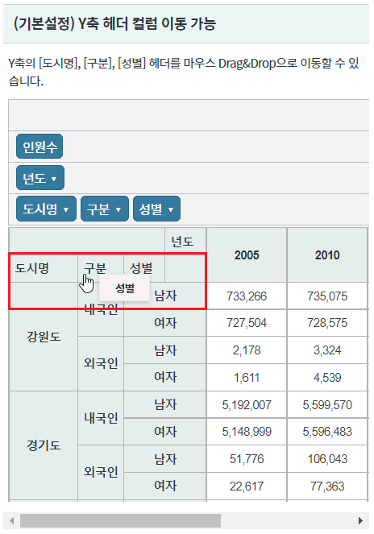
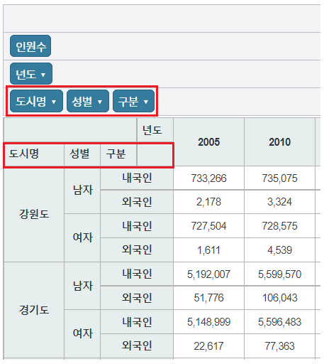
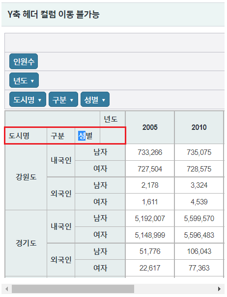
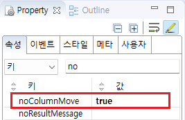
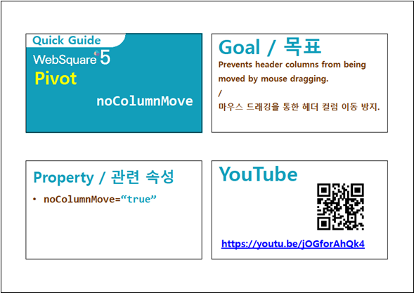

Pivot의 Y축 헤더 컬럼의 이동 기능 설정 예제입니다. 속성 "noColumnMove"의 설정을 통해 Y축의 헤더 이동 기능을 금지할 수 있습니다. 이 기능은 마우스 Drag&Drop을 통해 동작됩니다.
Y축 헤더 컬럼 이동 가능
Y축 헤더 컬럼 이동 불가능
영역 [(기본설정) Y축 헤더 컬럼 이동 가능]의 Pivot에서 테스트합니다.
Y축 헤더 [성별]을 마우스 Drag하여 Y축 헤더 [구분] 위에서 Drop합니다.
[브라우저(Chrome) 실행 예시]

Y축 헤더 컬럼 [성별]이 이동되어 컬럼 [구분] 앞쪽에 위치됩니다.
[브라우저(Chrome) 실행 예시]

영역 [Y축 헤더 컬럼 이동 불가능]의 Pivot에서 테스트합니다.
Y축 헤더 [성별]을 마우스 Drag하여 Y축 헤더 [구분] 위에서 Drop합니다.
문자열이 선택되고 컬럼은 이동되지 않습니다.
[브라우저(Chrome) 실행 예시]

속성을 지정합니다.
[필수] noColumnMove="true" //[default:false, true] pivot data영역의 header column을 마우스로 drag하여 컬럼을 이동을 금지합니다.
그림 1.웹스퀘어5 SP5 스튜디오의 Property View(속성창) 예시

[소스 코드 예시]
<!-- pivot 의 소스 본문 예시 --> <w2:pivot noColumnMove="true" id="piv_ex02"> <!-- 중략 --> </w2:pivot>
noColumnMove
[웹스퀘어5 SP5 개발 가이드] Pivot
링크 : https://docs1.inswave.com/sp5_user_guide/86bdcf48029b958b#4e8a7b2ee089c284
[웹스퀘어5 SP5 개발 가이드] Pivot - 헤더 컬럼 이동 금지 (noColumnMove)
링크 : https://docs1.inswave.com/sp5_user_guide/86bdcf48029b958b#3b4427920311d59e
Pivot - 헤더 컬럼 이동 금지 (noColumnMove)
링크 : https://youtu.be/jOGforAhQk4
